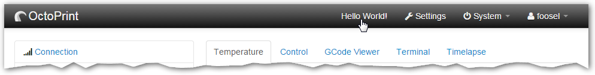

Plugin Tutorial¶
Over the course of this little tutorial we’ll build a full fledged, installable OctoPrint plugin that displays “Hello World!” at some locations throughout OctoPrint and also offers some other basic functionality to give you an idea of what you can achieve with OctoPrint’s plugin system.
First of all let use make sure that you have OctoPrint checked out and set up for development on your local development environment:
$ cd ~/devel
$ git clone https://github.com/OctoPrint/OctoPrint
[...]
$ cd OctoPrint
$ virtualenv venv
[...]
$ source venv/bin/activate
(venv) $ pip install -e '.[develop,plugins]'
[...]
(venv) $ octoprint --help
Usage: octoprint [OPTIONS] COMMAND [ARGS]...
[...]
Note
You can also develop your plugin directly on your Raspberry Pi running OctoPi of course. In that
case please ignore the above instructions, you’ll only need to activate the oprint
virtual environment:
$ source ~/oprint/bin/activate
(oprint) $ octoprint --help
Usage: octoprint [OPTIONS] COMMAND [ARGS]...
[...]
Setting up a local development environment will most likely be less painful than developing directly on the Pi. So do yourself the favor and do that instead where possible.
Important
This tutorial assumes you are running OctoPrint 1.3.0 and up. Please make sure your version of
OctoPrint is up to date before proceeding. If you did a fresh checkout, that should already
be the case but if not you might have to update first. You can check your version of OctoPrint
by running octoprint --version or by taking a look into the lower left corner in OctoPrint’s
web interface.
We’ll start at the most basic form a plugin can take - just a few simple lines of Python code:
__plugin_name__ = "Hello World"
__plugin_version__ = "1.0.0"
__plugin_description__ = "A quick \"Hello World\" example plugin for OctoPrint"
__plugin_pythoncompat__ = ">=3.9,<4"
Saving this as helloworld.py in ~/.octoprint/plugins yields you something resembling these log entries upon server startup:
(venv) $ octoprint serve
2023-11-20 11:14:35,122 - octoprint.startup - INFO - ******************************************************************************
2023-11-20 11:14:35,124 - octoprint.startup - INFO - Starting OctoPrint 1.9.3
2023-11-20 11:14:35,124 - octoprint.startup - INFO - ******************************************************************************
[...]
2023-11-20 11:14:35,124 - octoprint.plugin.core - INFO - Loading plugins from /home/gina/.octoprint/plugins, /home/gina/devel/OctoPrint/src/octoprint/plugins and installed plugin packages...
[...]
2023-11-20 11:14:36,135 - octoprint.plugin.core - INFO - 19 plugin(s) registered with the system:
[...]
| Hello World (1.0.0) = /home/gina/.octoprint/plugins/helloworld.py
[...]
Note
For Linux, the plugin folder be ~/.octoprint/plugins. For Windows it will be %APPDATA%/OctoPrint/plugins and for
Mac ~/Library/Application Support/OctoPrint/plugins.
OctoPrint found that plugin in the folder and took a look into it. The name and the version it displays in that log
entry it got from the __plugin_name__ and __plugin_version__ lines. It also read the description from
__plugin_description__ and stored it in an internal data structure, but we’ll just ignore this for now. Additionally
there is __plugin_pythoncompat__ which tells OctoPrint here that your plugin can be run under any Python versions
between 3.7 and 4. That is necessary so that your plugin will be loadable in OctoPrint instances running under Python 3
but not Python 2 (so you can use modern language features), and going forward you really should no longer have to care about
the end-of-life Python 2.
Saying hello: How to make the plugin actually do something¶
Apart from being discovered by OctoPrint, our plugin does nothing yet. We want to change that. Let’s make it print
“Hello World!” to the log upon server startup. Modify our helloworld.py like this:
import octoprint.plugin
class HelloWorldPlugin(octoprint.plugin.StartupPlugin):
def on_after_startup(self):
self._logger.info("Hello World!")
__plugin_name__ = "Hello World"
__plugin_version__ = "1.0.0"
__plugin_description__ = "A quick \"Hello World\" example plugin for OctoPrint"
__plugin_pythoncompat__ = ">=3.9,<4"
__plugin_implementation__ = HelloWorldPlugin()
and restart OctoPrint. You now get this output in the log:
2023-11-20 11:17:10,792 - octoprint.plugins.helloworld - INFO - Hello World!
Neat, isn’t it? We added a custom class that subclasses one of OctoPrint’s plugin mixins
with StartupPlugin and another control property, __plugin_implementation__, that instantiates
our plugin class and tells OctoPrint about it. Taking a look at the documentation of StartupPlugin we see that
this mixin offers two methods that get called by OctoPrint during startup of the server, on_startup() and
on_after_startup(). We decided to add our logging output by overriding on_after_startup(), but we could also have
used on_startup() instead, in which case our logging statement would be executed before the server was done starting
up and ready to serve requests.
You’ll also note that we are using self._logger for logging. Where did that one come from? OctoPrint’s plugin system
injects a some useful objects into our plugin implementation classes,
one of those being a fully instantiated python logger ready to be
used by your plugin. As you can see in the log output above, that logger uses the namespace octoprint.plugins.helloworld
for our little plugin here, or more generally octoprint.plugins.<plugin identifier>.
Growing up: How to make it distributable¶
If you now want to distribute this plugin to other OctoPrint users (since it is so awesome to be greeted upon server startup), let’s take a look at how you’d go about that now before our plugin gets more complicated.
You basically have two options to distribute your plugin. One would be about the exact same way we are using it now,
as a simple python file following the naming convention <plugin identifier>.py that your users add to their
~/.octoprint/plugins folder. You already know how that works. But let’s say you have more than just a simple plugin
that can be done in one file. Distributing multiple files and getting your users to install them in the right way
so that OctoPrint will be able to actually find and load them is certainly not impossible, but we want to do it in the
best way possible, meaning we want to make our plugin a fully installable Python module that your users will be able to
install directly via OctoPrint’s built-in Plugin Manager
or alternatively manually utilizing Python’s standard package manager pip directly.
So let’s begin. We’ll use the cookiecutter template for OctoPrint plugins
here. This should already be installed if you used the plugins extra while installing OctoPrint. However,
you may install it with:
(venv) $ pip install "cookiecutter>=2.1.1,<3"
Then we can use the octoprint dev plugin:new command [1] to generate a new OctoPrint plugin skeleton for us:
(venv) $ cd ~/devel
(venv) $ octoprint dev plugin:new helloworld
Cloning into 'cookiecutter-octoprint-plugin'...
remote: Counting objects: 101, done.
remote: Total 101 (delta 0), reused 0 (delta 0), pack-reused 101
Receiving objects: 100% (101/101), 53.69 KiB, done.
Resolving deltas: 100% (35/35), done.
plugin_package [octoprint_helloworld]:
plugin_name [OctoPrint-Helloworld]:
repo_name [OctoPrint-Helloworld]:
full_name [You]: Your Name
email [you@example.com]: you@somewhere.net
github_username [you]: yourGithubName
plugin_version [0.1.0]: 1.0.0
plugin_description [TODO]: A quick "Hello World" example plugin for OctoPrint
plugin_license [AGPLv3]:
plugin_homepage [https://github.com/yourGithubName/OctoPrint-Helloworld]:
plugin_source [https://github.com/yourGithubName/OctoPrint-Helloworld]:
plugin_installurl [https://github.com/yourGithubName/OctoPrint-Helloworld/archive/master.zip]:
(venv) $ cd OctoPrint-HelloWorld
Note
If octoprint dev plugin:new isn’t recognized as a command (and also doesn’t show up in the output of
octoprint --help, make sure you installed cookiecutter into the same python environment as OctoPrint.
This will create a project structure in the OctoPrint-HelloWorld folder we just changed to that looks like this:
extras/
github/
bug_report.yml
feature_request.yml
README.txt
helloworld.md
octoprint_helloworld/
static/
css/
README.txt
js/
README.txt
less/
README.txt
templates/
README.txt
__init__.py
translations/
README.txt
.editorconfig
.gitignore
babel.cfg
MANIFEST.in
README.md
pyproject.toml
requirements.txt
setup.py
Taskfile.yml
While we’ll need some of those folders later on, we’ll now delete everything that we don’t need right now first, that will make it easier to understand what folder does what later on. Delete the following folders and anything in them:
extrastranslationsoctoprint_helloworld/staticoctoprint_helloworld/templates
The final project structure should look like this for now:
octoprint_helloworld/
__init__.py
.editorconfig
.gitignore
babel.cfg
MANIFEST.in
README.md
pyproject.toml
requirements.txt
setup.py
Taskfile.yml
Out of curiosity, take a look into the pyproject.toml file. The cookiecutter template should have prefilled all the
configuration parameters for you:
[build-system]
requires = ["setuptools>=68", "wheel"]
build-backend = "setuptools.build_meta"
[project]
name = "OctoPrint-Helloworld"
version = "1.0.0"
description = "A quick "Hello World" example plugin for OctoPrint"
authors = [
{name = "Your name", email = "you@somewhere.net"}
]
readme = {file = "README.md", content-type = "text/markdown"}
dynamic = [
"license"
]
requires-python = ">=3.7, <4"
# any additional requirements (besides OctoPrint) should be listed here
dependencies = []
[tool.setuptools]
include-package-data = true
[tool.setuptools.packages.find]
include = [
"octoprint_helloworld",
"octoprint_helloworld.*"
]
[project.entry-points."octoprint.plugin"]
helloworld = "octoprint_helloworld"
[project.urls]
Homepage = "https://github.com/yourGithubName/OctoPrint-Helloworld"
[project.optional-dependencies]
develop = [
"go-task-bin"
]
Now all that’s left to do is to move our helloworld.py into the octoprint_helloworld folder and renaming it to
__init__.py. Make sure to delete the copy under ~/.octoprint/plugins in the process, including the .pyc file!
The plugin is now ready to be installed via pip install .. However, since we are still
working on our plugin, it makes more sense to use pip install -e . for now – this way the plugin becomes
discoverable by OctoPrint, however we don’t have to reinstall it after any changes we will still do. We can have the
octoprint dev plugin:install command do everything for us here, it will ensure to use the python binary belonging
to your OctoPrint installation:
(venv) $ octoprint dev plugin:install
>> /home/gina/.pyenv/versions/3.11.2/envs/octoprint-py311/bin/python -m pip install -e .
Obtaining file:///home/gina/devel/OctoPrint-Helloworld
[...]
Installing collected packages: OctoPrint-Helloworld
[...]
Successfully installed OctoPrint-Helloworld-0.1.0
Restart OctoPrint. Your plugin should still be properly discovered and the log line should be printed:
2023-11-20 13:43:34,132 - octoprint.startup - INFO - ******************************************************************************
2023-11-20 13:43:34,134 - octoprint.startup - INFO - Starting OctoPrint 1.9.3
2023-11-20 13:43:34,134 - octoprint.startup - INFO - ******************************************************************************
[...]
2023-11-20 13:43:34,134 - octoprint.plugin.core - INFO - Loading plugins from /home/gina/.octoprint/plugins, /home/gina/devel/OctoPrint/src/octoprint/plugins and installed plugin packages...
[...]
2023-11-20 13:43:34,818 - octoprint.plugin.core - INFO - 19 plugin(s) registered with the system:
[...]
| Hello World (1.0.0) = /home/gina/devel/OctoPrint-HelloWorld/octoprint_helloworld
[...]
2023-11-20 13:43:38,997 - octoprint.plugins.helloworld - INFO - Hello World!
Looks like it still works!
Something is still a bit ugly though. Take a look into __init__.py and pyproject.toml. It seems like we have a bunch
of information now defined twice:
__plugin_name__ = "Hello World"
__plugin_version__ = "1.0.0"
__plugin_description__ = "A quick \"Hello World\" example plugin for OctoPrint"
# ...
[project]
name = "OctoPrint-Helloworld"
version = "1.0.0"
description = "A quick "Hello World" example plugin for OctoPrint"
# ...
The nice thing about our plugin now being a proper Python package is that OctoPrint can and will access the metadata defined
within pyproject.toml! So, we don’t really need to define all this data twice. Remove __plugin_name__, __plugin_version__
and __plugin_description__ from __init__.py, but leave __plugin_implementation__ and __plugin_pythoncompat__:
import octoprint.plugin
class HelloWorldPlugin(octoprint.plugin.StartupPlugin):
def on_after_startup(self):
self._logger.info("Hello World!")
__plugin_pythoncompat__ = ">=3.9,<4"
__plugin_implementation__ = HelloWorldPlugin()
and restart OctoPrint:
2023-11-20 13:46:33,786 - octoprint.plugin.core - INFO - 19 plugin(s) registered with the system:
[...]
| OctoPrint-HelloWorld (1.0.0) = /home/gina/devel/OctoPrint-HelloWorld/octoprint_helloworld
[...]
Our “Hello World” Plugin still gets detected fine, but it’s now listed under the same name it’s installed under,
“OctoPrint-HelloWorld”. That’s a bit redundant and squashed, so we’ll override that bit via __plugin_name__ again:
import octoprint.plugin
class HelloWorldPlugin(octoprint.plugin.StartupPlugin):
def on_after_startup(self):
self._logger.info("Hello World!")
__plugin_name__ = "Hello World"
__plugin_pythoncompat__ = ">=3.9,<4"
__plugin_implementation__ = HelloWorldPlugin()
Restart OctoPrint again:
2023-11-20 13:48:54,122 - octoprint.plugin.core - INFO - 19 plugin(s) registered with the system:
[...]
| Hello World (1.0.0) = /home/gina/devel/OctoPrint-HelloWorld/octoprint_helloworld
[...]
Much better! You can override pretty much all of the metadata defined within pyproject.toml from within your Plugin itself –
take a look at the available control properties for all available
overrides.
Following the README of the Plugin Skeleton you could now already publish your plugin on Github and it would be directly installable by others using pip:
(venv) $ pip install https://github.com/yourGithubName/OctoPrint-HelloWorld/archive/main.zip
But let’s add some more features instead.
Frontend fun: How to add functionality to OctoPrint’s web interface¶
Outputting a log line upon server startup is all nice and well, but we want to greet not only the administrator of our OctoPrint instance but actually everyone that opens OctoPrint in their browser. Therefore, we need to modify OctoPrint’s web interface itself.
We can do this using the TemplatePlugin mixin. For now, let’s start with a little “Hello World!” in OctoPrint’s
navigation bar right at the top that links to the Wikipedia node about “Hello World” programs. For this we’ll first
add the TemplatePlugin to our HelloWorldPlugin class:
import octoprint.plugin
class HelloWorldPlugin(octoprint.plugin.StartupPlugin,
octoprint.plugin.TemplatePlugin):
def on_after_startup(self):
self._logger.info("Hello World!")
__plugin_name__ = "Hello World"
__plugin_pythoncompat__ = ">=3.9,<4"
__plugin_implementation__ = HelloWorldPlugin()
Next, we’ll create a sub folder templates underneath our octoprint_helloworld folder, and within that a file
helloworld_navbar.jinja2 like so:
<a href="https://en.wikipedia.org/wiki/Hello_world">Hello World!</a>
Our plugin’s directory structure should now look like this:
octoprint_helloworld/
templates/
helloworld_navbar.jinja2
__init__.py
.editorconfig
.gitignore
babel.cfg
MANIFEST.in
README.md
pyproject.toml
requirements.txt
setup.py
Taskfile.yml
Restart OctoPrint and open the web interface in your browser (make sure to clear your browser’s cache!).
Now look at that!
Settings Galore: How to make parts of your plugin user adjustable¶
Remember that Wikipedia link we added to our little link in the navigation bar? It links to the English Wikipedia. But what if we want to allow our users to adjust that according to their wishes, e.g. to link to the German language node about “Hello World” programs instead?
To allow your users to customized the behaviour of your plugin you’ll need to implement the SettingsPlugin
mixin and override it’s get_settings_defaults() method. We’ll save the URL to
inject into the link under the key url in our plugin’s settings and set it to the old value by default. We’ll therefore
return just a single key in our default settings dictionary. To be able to quickly see if we’ve done that right we’ll
extend our little startup message to also log the current setting to the console. We can access that via self._settings,
which is a little settings manager OctoPrint conveniently injects into our Plugin when we include the SettingsPlugin
mixin.
Let’s take a look at how all that would look in our plugin’s __init__.py:
import octoprint.plugin
class HelloWorldPlugin(octoprint.plugin.StartupPlugin,
octoprint.plugin.TemplatePlugin,
octoprint.plugin.SettingsPlugin):
def on_after_startup(self):
self._logger.info("Hello World! (more: %s)" % self._settings.get(["url"]))
def get_settings_defaults(self):
return dict(url="https://en.wikipedia.org/wiki/Hello_world")
__plugin_name__ = "Hello World"
__plugin_pythoncompat__ = ">=3.9,<4"
__plugin_implementation__ = HelloWorldPlugin()
Restart OctoPrint. You should see something like this:
2015-01-30 11:41:06,058 - octoprint.plugins.helloworld - INFO - Hello World! (more: https://en.wikipedia.org/wiki/Hello_world)
So far so good. But how do we now get that value into our template? We have two options, the
static one using so called template variables and a dynamic one which retrieves that data from the backend and binds it
into the template using Knockout data bindings. First let’s
take a look at the static version using template variables. We already have the TemplatePlugin
mixin included in our plugin, we just need to override its method get_template_vars()
to add our URL as a template variable.
Adjust your plugin’s __init__.py like this:
import octoprint.plugin
class HelloWorldPlugin(octoprint.plugin.StartupPlugin,
octoprint.plugin.TemplatePlugin,
octoprint.plugin.SettingsPlugin):
def on_after_startup(self):
self._logger.info("Hello World! (more: %s)" % self._settings.get(["url"]))
def get_settings_defaults(self):
return dict(url="https://en.wikipedia.org/wiki/Hello_world")
def get_template_vars(self):
return dict(url=self._settings.get(["url"]))
__plugin_name__ = "Hello World"
__plugin_pythoncompat__ = ">=3.9,<4"
__plugin_implementation__ = HelloWorldPlugin()
Also adjust your plugin’s templates/helloworld_navbar.jinja2 like this:
<a href="{{ plugin_helloworld_url|escape }}">Hello World!</a>
OctoPrint injects the template variables that your plugin defines prefixed with plugin_<plugin identifier>_ into
the template renderer, so your url got turned into plugin_helloworld_url which you can now use as a simple
Jinja2 Variable in your plugin’s template.
Restart OctoPrint and shift-reload the page in your browser (to make sure you really get a fresh copy). The link should still work and point to the URL we defined as default.
Let’s change the URL! Open up your OctoPrint instance’s config.yaml file and add the following to it (if a plugins
section doesn’t yet exist in the file, create it):
# [...]
plugins:
helloworld:
url: https://de.wikipedia.org/wiki/Hallo-Welt-Programm
# [...]
Restart OctoPrint. Not only should the URL displayed in the log file have changed, but also the link should now (after a proper shift-reload) point to the German Wikipedia node about “Hello World” programs:
2015-01-30 11:47:18,634 - octoprint.plugins.helloworld - INFO - Hello World! (more: https://de.wikipedia.org/wiki/Hallo-Welt-Programm)
Nice! But not very user friendly. We don’t have any way yet to edit the URL from within OctoPrint and have to restart the server and reload the page every time we want a value change to take effect. Let’s try adding a small settings dialog to our plugin, allowing us to edit the URL so that changes take effect immediately.
First of all, we’ll create the settings dialog. You might already have guessed that we’ll need another template for that.
So in your plugin’s templates folder create a new file helloworld_settings.jinja2 and put the following content
into it:
<form class="form-horizontal">
<div class="control-group">
<label class="control-label">{{ _('URL') }}</label>
<div class="controls">
<input type="text" class="input-block-level" data-bind="value: settings.plugins.helloworld.url">
</div>
</div>
</form>
Note how we access our plugin’s property via settings.plugins.helloworld.url. The settings observable is made
available in the SettingsViewModel and holds the exact data structure returned from the server for all of
OctoPrint’s settings. Accessing plugin settings hence works by following the path under which they are stored in
OctoPrint’s internal settings data model (made public via the config.yaml), plugins.<plugin identifier>.<configuration key>.
We’ll bind our own settings dialog to the existing SettingsViewModel, so this will be the way we’ll access our
property.
Now adjust your templates/helloworld_navbar.jinja2 file to use a data-bind attribute to set the value from the
settings view model into the href attribute of the link tag:
<a href="javascript:void()" data-bind="attr: {href: settings.settings.plugins.helloworld.url}">Hello World!</a>
You might have noticed the quite ugly way to access our plugin’s url property here: settings.settings.plugins.helloworld.url.
The reason for this is that we’ll make our plugin use the existing NavigationViewModel which holds the
SettingsViewModel as a property called settings. So to get to the settings property of the SettingsViewModel
from the NavigationViewModel, we’ll need to first “switch” to the SettingsViewModel using its property name. Hence
the ugly access string.
If you were now to restart OctoPrint and reload the web interface, you’ll get the settings dialog placed just fine
in OctoPrint’s settings, and the link would also still show up in the navigation bar, but both the input field of the
settings dialog as well as the link’s href attribute would not show our link. The reason for this is that OctoPrint
by default assumes that you’ll want to bind your own view models to your templates and hence “unbinds” the included
templates from the templates that are in place at the injected location already. In order to tell OctoPrint to please
don’t do this here (since we do want to use both NavigationViewModel and SettingsViewModel), we’ll need to
override the default template configuration using the get_template_configs method. We’ll tell OctoPrint to use no custom bindings
for both our navbar and our settings plugin. We’ll also remove the override of octoprint.plugin.TemplatePlugin.get_template_vars()
again since we don’t use that anymore:
import octoprint.plugin
class HelloWorldPlugin(octoprint.plugin.StartupPlugin,
octoprint.plugin.TemplatePlugin,
octoprint.plugin.SettingsPlugin):
def on_after_startup(self):
self._logger.info("Hello World! (more: %s)" % self._settings.get(["url"]))
def get_settings_defaults(self):
return dict(url="https://en.wikipedia.org/wiki/Hello_world")
def get_template_configs(self):
return [
dict(type="navbar", custom_bindings=False),
dict(type="settings", custom_bindings=False)
]
__plugin_name__ = "Hello World"
__plugin_pythoncompat__ = ">=3.9,<4"
__plugin_implementation__ = HelloWorldPlugin()
Restart OctoPrint and shift-reload your browser. Your link in the navigation bar should still point to the URL we
defined in config.yaml earlier. Open the “Settings” and click on the new “Hello World” entry that shows up under
“Plugins”.
Nice! Edit the value, then click “Save”. Your link in the navigation bar should now have been updated as well.
Note
The way we’ve done our data binding and how OctoPrint currently works, your link’s target will update immediately when you update the value in the settings dialog. Even if you click Cancel instead of Save, the change will still be reflected in the UI but will be overwritten again by the stored data upon a reload. This is caused by OctoPrint not storing a copy of the settings data while it is being edited, which might be changed in the future to prevent this unexpected behaviour from occurring.
Congratulations, you’ve just made your Plugin configurable :)
More frontend fun: Adding custom javascript to your frontend components¶
In the previous section we set that custom_bindings parameter to False since we wanted OctoPrint to bind the
SettingsViewModel to our settings dialog and the NavigationViewModel to our entry in the nav bar.
But what if we want to define our own, with more functionality that is already available? Let’s take a look. We’ll now add an additional UI component to our OctoPrint interface, a custom tab. It will act as a little internal web browser, showing the website behind the URL from the settings in an IFrame but also allowing the user to load a different URL without having to change the settings.
First let us create the Jinja2 template for our tab. In your plugin’s templates folder create a new file
helloworld_tab.jinja2 like so:
<div class="input-append">
<input type="text" class="input-xxlarge" data-bind="value: newUrl">
<button class="btn btn-primary" data-bind="click: goToUrl">{{ _('Go') }}</button>
</div>
<iframe data-bind="attr: {src: currentUrl}" style="width: 100%; height: 600px; border: 1px solid #808080"></iframe>
Then we create a new folder in your plugin’s root called static and within that folder another folder by the name of
js. Finally, within that folder create a file helloworld.js. Our plugin’s folder structure should now
look like this:
octoprint_helloworld/
static/
js/
helloworld.js
templates/
helloworld_navbar.jinja2
helloworld_settings.jinja2
helloworld_tab.jinja2
__init__.py
.editorconfig
.gitignore
babel.cfg
MANIFEST.in
README.md
pyproject.toml
requirements.txt
setup.py
Taskfile.yml
We need to tell OctoPrint about this new static asset so that it will properly inject it into the page. For this we
just need to subclass AssetPlugin and override its method get_assets()
like so:
import octoprint.plugin
class HelloWorldPlugin(octoprint.plugin.StartupPlugin,
octoprint.plugin.TemplatePlugin,
octoprint.plugin.SettingsPlugin,
octoprint.plugin.AssetPlugin):
def on_after_startup(self):
self._logger.info("Hello World! (more: %s)" % self._settings.get(["url"]))
def get_settings_defaults(self):
return dict(url="https://en.wikipedia.org/wiki/Hello_world")
def get_template_configs(self):
return [
dict(type="navbar", custom_bindings=False),
dict(type="settings", custom_bindings=False)
]
def get_assets(self):
return dict(
js=["js/helloworld.js"]
)
__plugin_name__ = "Hello World"
__plugin_pythoncompat__ = ">=3.9,<4"
__plugin_implementation__ = HelloWorldPlugin()
Note how we did not add another entry to the return value of get_template_configs().
Remember how we only added those since we wanted OctoPrint to use existing bindings on our navigation bar and settings
menu entries? We don’t want this time, and we named our tab template such that OctoPrint will pick it up automatically
so we don’t have to do anything here.
Then we’ll create our custom Knockout view model in helloworld.js
like so:
$(function() {
function HelloWorldViewModel(parameters) {
var self = this;
self.settings = parameters[0];
// this will hold the URL currently displayed by the iframe
self.currentUrl = ko.observable();
// this will hold the URL entered in the text field
self.newUrl = ko.observable();
// this will be called when the user clicks the "Go" button and set the iframe's URL to
// the entered URL
self.goToUrl = function() {
self.currentUrl(self.newUrl());
};
// This will get called before the HelloWorldViewModel gets bound to the DOM, but after its
// dependencies have already been initialized. It is especially guaranteed that this method
// gets called _after_ the settings have been retrieved from the OctoPrint backend and thus
// the SettingsViewModel been properly populated.
self.onBeforeBinding = function() {
self.newUrl(self.settings.settings.plugins.helloworld.url());
self.goToUrl();
}
}
// This is how our plugin registers itself with the application, by adding some configuration
// information to the global variable OCTOPRINT_VIEWMODELS
OCTOPRINT_VIEWMODELS.push([
// This is the constructor to call for instantiating the plugin
HelloWorldViewModel,
// This is a list of dependencies to inject into the plugin, the order which you request
// here is the order in which the dependencies will be injected into your view model upon
// instantiation via the parameters argument
["settingsViewModel"],
// Finally, this is the list of selectors for all elements we want this view model to be bound to.
["#tab_plugin_helloworld"]
]);
});
Take a close look at lines 31 to 42. This is how our plugin tells OctoPrint about our new view model, how to
instantiate it, which dependencies to inject and to which elements in the final page to bind. Since we want to access
the URL from the settings of our plugin, we’ll have OctoPrint inject the SettingsViewModel into our own view model,
which is registered within OctoPrint under the name settingsViewModel. We’ll only bind to our custom tab
for now, which OctoPrint will make available in a container with the id tab_plugin_helloworld (unless otherwise
configured).
Our view model defines two observables: newUrl, which we bound to the input field in our template, and currentUrl
which we bound to the src attribute of the “browser iframe” in our template. There’s also a function goToUrl
which we bound to the click event of the “Go” button in our template.
Restart OctoPrint and shift-reload the browser. You should see a shiny new “Hello World” tab right at the end of the tab bar. Click on it!

The desktop version of that article looks a bit squished in there, so let’s enter https://de.m.wikipedia.org/wiki/Hallo-Welt-Programm
into the input field and click the “Go” button. The page inside the iframe should be replaced with the mobile version
of the same article.
Style matters: Injecting custom CSS into the page¶
So it appears that this stuff is working great already. Only one thing is a bit ugly, let’s take another look at
our helloworld_tab.jinja2:
<div class="input-append">
<input type="text" class="input-xxlarge" data-bind="value: newUrl">
<button class="btn btn-primary" data-bind="click: goToUrl">{{ _('Go') }}</button>
</div>
<iframe data-bind="attr: {src: currentUrl}" style="width: 100%; height: 600px; border: 1px solid #808080"></iframe>
We hardcoded some style on our iframe in line 6, to make it look a bit better. It would be nicer if that was actually
located inside a stylesheet instead of directly inside our HTML template. Of course that’s no problem, we’ll just
add a CSS file to our plugin’s provided static assets.
First we’ll create a new folder within our plugin’s static folder called css and within that folders a file
helloworld.css. Our plugin’s file structure should now look like this:
octoprint_helloworld/
static/
css/
helloworld.css
js/
helloworld.js
templates/
helloworld_navbar.jinja2
helloworld_settings.jinja2
helloworld_tab.jinja2
__init__.py
.editorconfig
.gitignore
babel.cfg
MANIFEST.in
README.md
pyproject.toml
requirements.txt
setup.py
Taskfile.yml
Put something like the following into helloworld.css:
#tab_plugin_helloworld iframe {
width: 100%;
height: 600px;
border: 1px solid #808080;
}
Don’t forget to remove the style attribute from the iframe tag in helloworld_tab.jinja2:
<div class="input-append">
<input type="text" class="input-xxlarge" data-bind="value: newUrl">
<button class="btn btn-primary" data-bind="click: goToUrl">{{ _('Go') }}</button>
</div>
<iframe data-bind="attr: {src: currentUrl}"></iframe>
Then adjust our plugin’s __init__.py so that the get_assets() method returns
a reference to our CSS file:
import octoprint.plugin
class HelloWorldPlugin(octoprint.plugin.StartupPlugin,
octoprint.plugin.TemplatePlugin,
octoprint.plugin.SettingsPlugin,
octoprint.plugin.AssetPlugin):
def on_after_startup(self):
self._logger.info("Hello World! (more: %s)" % self._settings.get(["url"]))
def get_settings_defaults(self):
return dict(url="https://en.wikipedia.org/wiki/Hello_world")
def get_template_configs(self):
return [
dict(type="navbar", custom_bindings=False),
dict(type="settings", custom_bindings=False)
]
def get_assets(self):
return dict(
js=["js/helloworld.js"],
css=["css/helloworld.css"]
)
__plugin_name__ = "Hello World"
__plugin_pythoncompat__ = ">=3.9,<4"
__plugin_implementation__ = HelloWorldPlugin()
OctoPrint by default bundles all CSS, JavaScript and LESS files to reduce the amount of requests necessary to fully
load the page. But in order to fully be able to see how what we just did changes how our plugin interacts with OctoPrint
we want to disable that behaviour for now. Open up OctoPrint’s config.yaml and disable bundling of the webassets:
# [...]
devel:
webassets:
bundle: false
# [...]
Restart OctoPrint, shift-reload your browser and take a look. Everything should still look like before, but now
OctoPrint included our stylesheet and the style information for the iframe is taken from that instead of
hardcoded in our template. Way better!
Now, if you had something more complicated than just the couple of line of CSS we used here, you might want to use something like LESS for generating your CSS from. If you use LESS, which is what OctoPrint uses for that purpose, you can even put OctoPrint into a mode where it directly uses your LESS files instead of the generated CSS files (and compiles them on the fly in your browser using lessjs), which makes development so much easier. Let’s try that, so you know how it works for future bigger projects.
Add another folder to our static folder called less and within that create a file helloworld.less. Put
into that the same content as into our CSS file. Compile that LESS file to CSS [2], overwriting our old helloworld.css
in the process. The folder structure of our plugin should now look like this:
octoprint_helloworld/
static/
css/
helloworld.css
js/
helloworld.js
less/
helloworld.less
templates/
helloworld_navbar.jinja2
helloworld_settings.jinja2
helloworld_tab.jinja2
__init__.py
.editorconfig
.gitignore
babel.cfg
MANIFEST.in
README.md
pyproject.toml
requirements.txt
setup.py
Taskfile.yml
Then adjust our returned assets to include our LESS file as well:
import octoprint.plugin
class HelloWorldPlugin(octoprint.plugin.StartupPlugin,
octoprint.plugin.TemplatePlugin,
octoprint.plugin.SettingsPlugin,
octoprint.plugin.AssetPlugin):
def on_after_startup(self):
self._logger.info("Hello World! (more: %s)" % self._settings.get(["url"]))
def get_settings_defaults(self):
return dict(url="https://en.wikipedia.org/wiki/Hello_world")
def get_template_configs(self):
return [
dict(type="navbar", custom_bindings=False),
dict(type="settings", custom_bindings=False)
]
def get_assets(self):
return dict(
js=["js/helloworld.js"],
css=["css/helloworld.css"],
less=["less/helloworld.less"]
)
__plugin_name__ = "Hello World"
__plugin_pythoncompat__ = ">=3.9,<4"
__plugin_implementation__ = HelloWorldPlugin()
and enable LESS mode by adjusting one of OctoPrint’s devel flags via the config.yaml file:
# [...]
devel:
stylesheet: less
webassets:
bundle: false
# [...]
Restart OctoPrint and shift-reload. Your “Hello World” tab should still look like before. Take a look at the site’s
source code. In the head section of the page you’ll see that instead of your helloworld.css OctoPrint now
embedded the helloworld.less file instead:
<head>
<!-- [...] -->
<link href="/static/less/octoprint.less" rel="stylesheet/less" type="text/css" media="screen">
<!-- [...] -->
<link href="/plugin/helloworld/static/less/helloworld.less" rel="stylesheet/less" type="text/css" media="screen">
<!-- [...] -->
<script src="/static/js/lib/less.min.js" type="text/javascript"></script>
<!-- [...] -->
</head>
Switch your config back to CSS mode by either removing the stylesheet setting we just added to config.yaml or
setting it to css, e.g.
# [...]
devel:
stylesheet: css
webassets:
bundle: false
# [...]
Restart and shift-reload and take another look at the head:
<head>
<!-- [...] -->
<link href="/static/css/octoprint.css" rel="stylesheet" type="text/css" media="screen">
<!-- [...] -->
<link href="/plugin/helloworld/static/css/helloworld.css" rel="stylesheet" type="text/css" media="screen">
<!-- [...] -->
<script src="/static/js/lib/less.min.js" type="text/javascript"></script>
<!-- [...] -->
</head>
Now the CSS file is linked and no trace of the LESS links is left in the source. This should help to speed up your development tremendously when you have to work with complex stylesheets, just don’t forgot to check the generated CSS file in with the rest of your plugin or people will miss it when trying to run your plugin!
Remember when I mentioned that OctoPrint by default bundles all our assets for us? We adjusted our config.yaml to
stop it from doing that at the start of this section, we should switch this back now:
# [...]
devel:
stylesheet: css
# [...]
Just out of curiosity, restart, shift-reload and take a final look at the head:
<head>
<!-- [...] -->
<link href="/static/webassets/packed.css?85a134" rel="stylesheet" type="text/css" media="screen">
<link href="/static/webassets/packed.less?85a134" rel="stylesheet/less" type="text/css" media="screen">
<script src="/static/js/lib/less.min.js" type="text/javascript"></script>
<!-- [...] -->
</head>
Way more compact, isn’t it?
Note
If your plugin only provides CSS files, OctoPrint will detect this when switched to LESS mode and include your CSS files instead of any non-existing LESS files. So you don’t really have to use LESS if you don’t want, but as soon as you need it just switch over.
The same thing works the other way around too by the way. If your plugin only provides LESS files, OctoPrint will link to those, lessjs will take care of the compilation. Please keep in mind though that also providing CSS files is the cleaner way.
Where do we go from here?¶
You’ve now seen how easy it is to add functionality to OctoPrint with this little tutorial. You can find the full source code of the little Hello World plugin we built together here on Github.
But I want to invite you to dive deeper into OctoPrint’s plugin system. To get an idea of all the other various plugin types you haven’t seen yet, take a look at the available plugin mixins.
For some insight on how to create plugins that react to various events within OctoPrint, the Growl Plugin might be a good example to learn from. For how to add support for a slicer, the CuraEngine Legacy plugin might give some hints. For extending OctoPrint’s interface, the NavbarTemp plugin might show what’s possible with a few lines of code already. Finally, just take a look at the official Plugin Repository if you are looking for examples.
See also
- Jinja Template Designer Documentation
Jinja’s Template Designer Documentation describes the syntax and semantics of the template language used by OctoPrint’s frontend.
Footnotes